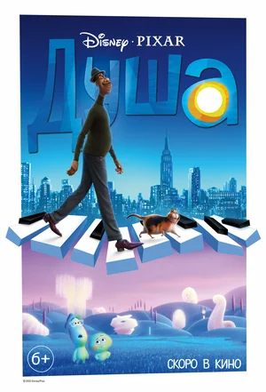

О фильме
Уже немолодой школьный учитель музыки Джо Гарднер всю жизнь мечтал выступать на сцене в составе джазового ансамбля. Однажды он успешно проходит прослушивание у известной клубной певицы и, возвращаясь домой вне себя от счастья, падает в люк и умирает. Теперь у Джо одна дорога - в Великое После, но он сбегает с идущего в вечность эскалатора и случайно попадает в Великое До. Тут новенькие души обретают себя, и у будущих людей зарождаются увлечения, мечты и интересы. Джо становится наставником упрямой души 22, которая уже много веков не может найти свою искру и отправиться на Землю.
Посмотреть трейлер